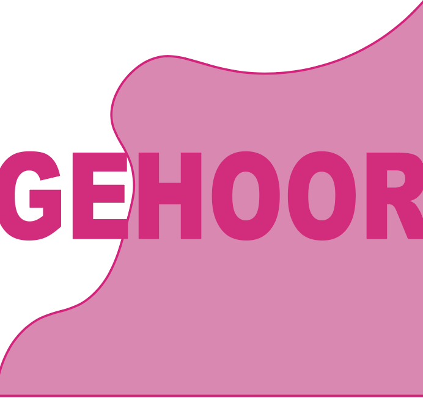

Aflevering 1
Piep in je oor na een festival? Je vrienden niet goed kunnen verstaan, of na het feest nog de beat horen in je bed? De nadelen van je favoriete muziek live horen. Helaas hebben wij er allemaal welleens last van, maar wat kunnen wij er aan doen om de side-effects te verminderen?